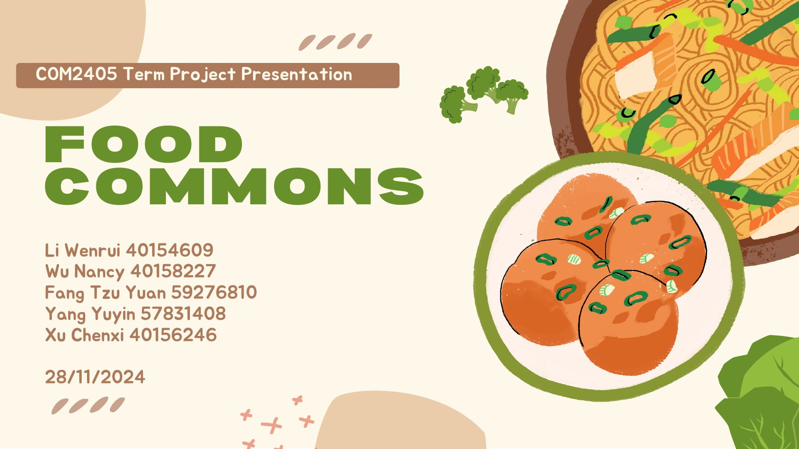

公益议题策划
方案将食物浪费议题转为瑕疵柑橘果酱教程与节气食物保存内容，让公众能理解并参与。
04 / CONTENT / 策划
CityU 交换期间 · COM2405 传播与营销课程 · 项目组长 · 2024
MY ROLE
我担任项目组长，统筹公益内容策划与团队协作，围绕食物浪费和剩食再分配议题协调创意方向、制作衔接与成果汇总。带领团队将议题转化为果酱教程与节气海报，并将脚本、视听内容、图文发布和阶段反馈整合为期末汇报，推动创意从讨论走向完整交付。
OVERVIEW
围绕香港食物浪费与剩食再分配议题，团队为 Food Commons 设计可操作的公益内容：用定格动画展示瑕疵柑橘制成果酱，并以“小雪”节气海报传达食物保存与节约理念。汇报呈现脚本、拍摄、剪辑、图文发布和阶段指标，展示将社会议题转化为易理解、可参与的社交内容的能力。
CAPABILITY IN PRACTICE
方案将食物浪费议题转为瑕疵柑橘果酱教程与节气食物保存内容，让公众能理解并参与。
以组长角色连接内容构思与团队交付；第 8–10、14–17 页呈现脚本、分镜、定格与动态镜头、剪辑、图文和发布材料，形成围绕同一公益主题的内容组合。
第 11 页记录团队内容的播放、点赞与分享，并与汇报中的此前内容比较；这些是短期观察，不是增长归因实验。
READ THE COMPLETE WORK
下方展示完整作品，可连续翻页或跳到任意一页。

点击页面可放大查看。阅读器聚焦后可用左右方向键翻页。